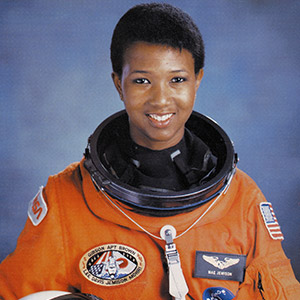
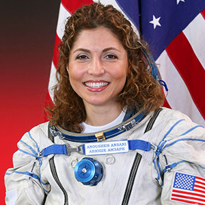
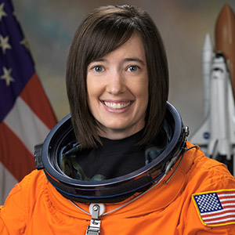

NASA Astronauts
Photo courtesy of Unsplash
How to become an Astronaut
The word "astronaut" comes from the Greek words meaning "space sailor". There are a variety of space professions and duties—for example, commander, pilot, or mission specialist—and varying qualifications for each. However, all qualifications include:
- Physical health requirements
- Height requirements
- Visual requirements
- Bachelor's degree from an accredited institution in engineering, biological science, physical science, or mathematics
Find out more about the requirements for becoming a NASA Astronaut.
"What everyone in the astronaut corps shares in common is not gender or ethnic background, but motivation, perseverance, and desire—the desire to participate in a voyage of discovery." —Ellen Ochoa
NASA Logo from Wikipedia Commons
{kind=link}
About NASA
"The National Aeronautics and Space Administration (NASA) is an independent agency of the executive branch of the United States federal government responsible for the civilian space program as well as aeronautics and aerospace research."
Read more about NASAWomen in Space
Mae Jemison
The first African-American woman to travel in space. In September of 1992, she orbited aboard the Space Shuttle Endeavour.
Anousheh Ansari
The first Iranian woman in space and first self-funded woman to travel to the International Space Station (the fourth overall self-funded space traveler).
K. Megan Mcarthur
The last person to be “hands on” with the Hubble Space Telescope, the only telescope designed to be serviced in space by astronauts.